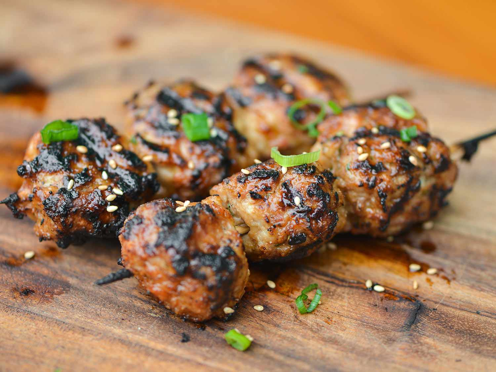

Tsukune Meatballs

Description
Japanese skewered grilled chicken meatballs in a tare sauce.
Ingredients
- 1 1/2 pounds ground chicken thighs
- 1/2 cup panko bread crumbs
- 1/4 cup finely chopped scallions
- 1 large egg, lightly beaten
- 2 teaspoons finely grated fresh ginger
- 2 teaspoons finely minced fresh garlic (about 2 medium cloves
- 1 teaspoon toasted sesame oil
- 1 teaspoon kosher salt
- 1/2 teaspoon ground white pepper
-
Tare
Directions
- Using hands, mix together chicken, bread crumbs, scallions, egg, ginger, garlic, sesame oil, salt, and white pepper until thoroughly combined. Form mixture into 1-inch meatballs and thread onto skewers.
- Light one chimney full of charcoal. When all charcoal is lit and covered with gray ash, pour out and spread coals evenly over entire surface of charcoal grate. Set cooking grate in place, cover grill and allow to preheat for 5 minutes. Clean and oil grilling grate.
- Careful transfer skewers to grill, if necessary supporting meatballs from bottom to prevent them from falling off skewers. Grill until first side is well browned, about 3-4 minutes. Using tongs, rotate meatballs and cook until well browned on second side, about 2-3 minutes. Repeat for remaining two sides.
- Brush tare sauce all over meatballs and allow to cook for 15-30 seconds longer. Transfer skewers to a plate or serving dish, brush lightly with sauce again and let rest for 5 minutes. Serve immediately.